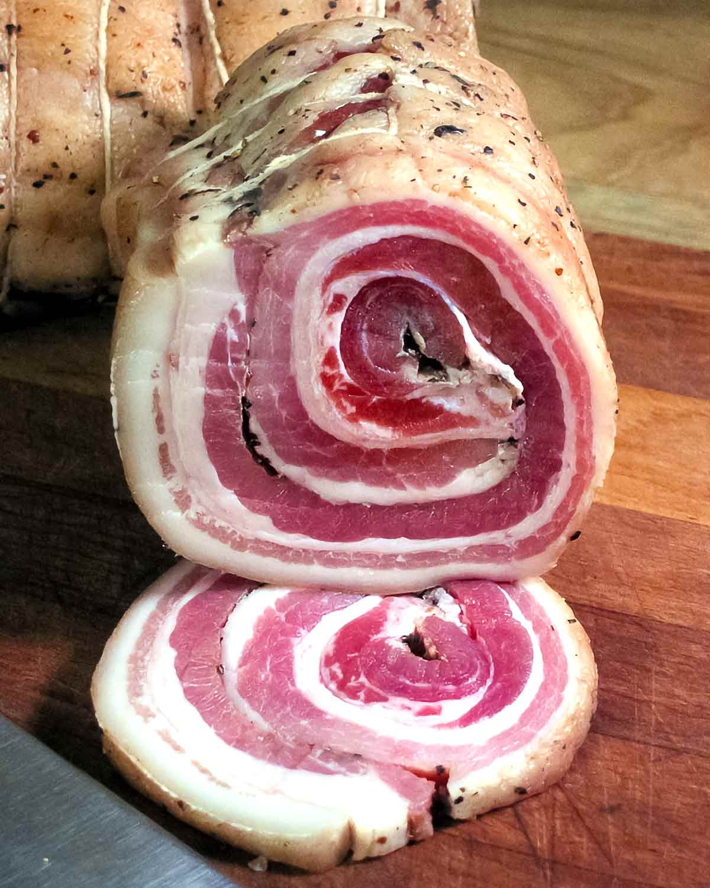

Pancetta
Home

Pancetta is a salt-cured pork belly meat product in a category known as salume. In Italy, it is often used to add depth to soups and pasta.
- mixture of salt,
- dextrose
- spices and spice extracts,
- odium erythorbate
- garlic
- sugar
- sodium nitrate
- pork is salted and held in a tub of brine for 10–14 days
- After salting and brining, the pork is rolled, with layers of fat on the outside surrounding a meaty core.
- Following rolling and packing, the pork undergoes enzymatic reactions
- Finally, the smoked pork is held at 12–14 °C and 72–75% relative humidity for 3–4 weeks for drying